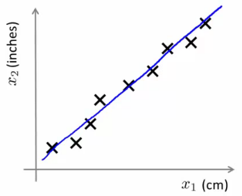

14: Dimensionality Reduction (PCA)
Motivation 1: Data compression
- Start talking about a second type of unsupervised learning problem - dimensionality reduction
- Why should we look at dimensionality reduction?
Compression
- Speeds up algorithms
- Reduces space used by data for them
- What is dimensionality reduction?
- So you've collected many features - maybe more than you need
- Can you "simplify" your data set in a rational and useful way?
- Example
- Redundant data set - different units for same attribute
- Reduce data to 1D (2D->1D)

- Example above isn't a perfect straight line because of round-off error
- Data redundancy can happen when different teams are working independently
- Often generates redundant data (especially if you don't control data collection)
- Another example
- Helicopter flying - do a survey of pilots (x1 = skill, x2 = pilot enjoyment)
- These features may be highly correlated
- This correlation can be combined into a single attribute called aptitude (for example)
- Helicopter flying - do a survey of pilots (x1 = skill, x2 = pilot enjoyment)
- So you've collected many features - maybe more than you need
- What does dimensionality reduction mean?
- In our example we plot a line
- Take exact example and record position on that line

- So before x1 was a 2D feature vector (X and Y dimensions)
- Now we can represent x1 as a 1D number (Z dimension)
- So we approximate original examples
- Allows us to halve the amount of storage
- Gives lossy compression, but an acceptable loss (probably)
- The loss above comes from the rounding error in the measurement, however
- Another example 3D -> 2D
- So here's our data

- Maybe all the data lies in one plane
- This is sort of hard to explain in 2D graphics, but that plane may be aligned with one of the axes
- Or may not...
- Either way, the plane is a small, constant 3D space
- In the diagram below, imagine all our data points are sitting "inside" the blue tray (has a dark blue exterior face and a light blue inside)

- Because they're all in this relative shallow area, we can basically ignore one of the dimensions, so we draw two new lines (z1 and z2) along the x and y planes of the box, and plot the locations in that box
- i.e. we lose the data in the z-dimension of our "shallow box" (NB "z-dimensions" here refers to the dimension relative to the box (i.e. its depth) and NOT the z dimension of the axis we've got drawn above) but because the box is shallow it's OK to lose this. Probably....
- This is sort of hard to explain in 2D graphics, but that plane may be aligned with one of the axes
- Plot values along those projections

- So we've now reduced our 3D vector to a 2D vector
- So here's our data
- In reality we'd normally try and do 1000D -> 100D
Motivation 2: Visualization
- It's hard to visualize highly dimensional data
- Dimensionality reduction can improve how we display information in a tractable manner for human consumption
- Why do we care?
- Often helps to develop algorithms if we can understand our data better
- Dimensionality reduction helps us do this, see data in a helpful way
- Good for explaining something to someone if you can "show" it in the data
- Example;
- Collect a large data set about many facts of a country around the world
The first six of about fifty features per country. x1 is GDP through to x6, mean household income; the rest continue off the right. Country GDP
(trillions of US$)Per capita GDP
(thousands of intl. $)Human Development Index Life expectancy Poverty Index
(Gini as percentage)Mean household income
(thousands of US$)… Canada 1.577 39.17 0.908 80.7 32.6 67.293 … China 5.878 7.54 0.687 73 46.9 10.22 … India 1.632 3.41 0.547 64.7 36.8 0.735 … Russia 1.48 19.84 0.755 65.5 39.9 0.72 … Singapore 0.223 56.69 0.866 80 42.5 67.1 … USA 14.527 46.86 0.91 78.3 40.8 84.3 … … … … … … … … … - So
- x1 = GDP
- ...
- x6 = mean household
- Say we have 50 features per country
- How can we understand this data better?
- Very hard to plot 50 dimensional data
- So
- Using dimensionality reduction, instead of each country being represented by a 50-dimensional feature vector
- Come up with a different feature representation (z values) which summarize these features
The same countries after reducing 50 dimensions to 2. Each row is now a pair of numbers that can be plotted. Country z1 z2 Canada 1.6 1.2 China 1.7 0.3 India 1.6 0.2 Russia 1.4 0.5 Singapore 0.5 1.7 USA 2 1.5 … … …
- Come up with a different feature representation (z values) which summarize these features
- This gives us a 2-dimensional vector
- Reduce 50D -> 2D
- Plot as a 2D plot
- Typically you don't generally ascribe meaning to the new features (so we have to determine what these summary values mean)
- e.g. may find horizontal axis corresponds to overall country size/economic activity
- and y axis may be the per-person well being/economic activity
- So despite having 50 features, there may be two "dimensions" of information, with features associated with each of those dimensions
- It's up to you to assess which of the features can be grouped to form summary features, and how best to do that (feature scaling is probably important)
- Helps show the two main dimensions of variation in a way that's easy to understand
- Collect a large data set about many facts of a country around the world
Principal Component Analysis (PCA): Problem Formulation
- For the problem of dimensionality reduction the most commonly used algorithm is PCA
- Here, we'll start talking about how we formulate precisely what we want PCA to do
- So
- Say we have a 2D data set which we wish to reduce to 1D

- In other words, find a single line onto which to project this data
- How do we determine this line?
- The distance between each point and the projected version should be small (blue lines below are short)
- PCA tries to find a lower dimensional surface so the sum of squares onto that surface is minimized
- The blue lines are sometimes called the projection error
- PCA tries to find the surface (a straight line in this case) which has the minimum projection error

- PCA tries to find the surface (a straight line in this case) which has the minimum projection error
- As an aside, you should normally do mean normalization and feature scaling on your data before PCA
- How do we determine this line?
- Say we have a 2D data set which we wish to reduce to 1D
- A more formal description is
- For 2D-1D, we must find a vector u(1), which is of some dimensionality
- Onto which you can project the data so as to minimize the projection error

- u(1) can be positive or negative (-u(1)) which makes no difference
- Each of the vectors define the same red line
- In the more general case
- To reduce from nD to kD we
- Find k vectors (u(1), u(2), ... u(k)) onto which to project the data to minimize the projection error
- So lots of vectors onto which we project the data
- Find a set of vectors which we project the data onto the linear subspace spanned by that set of vectors
- We can define a point in a plane with k vectors
- e.g. 3D->2D
- Find pair of vectors which define a 2D plane (surface) onto which you're going to project your data
- Much like the "shallow box" example in compression, we're trying to create the shallowest box possible (by defining two of it's three dimensions, so the box's depth is minimized)

- To reduce from nD to kD we
- How does PCA relate to linear regression?
- PCA is not linear regression
- Despite cosmetic similarities, very different
- For linear regression, fitting a straight line to minimize the squared distance between a point and the line
- NB - VERTICAL distance between point
- For PCA minimizing the magnitude of the shortest orthogonal distance
- Gives very different effects
- More generally
- With linear regression we're trying to predict "y"
- With PCA there is no "y" - instead we have a list of features and all features are treated equally
- If we have 3D dimensional data 3D->2D
- Have 3 features treated symmetrically
- If we have 3D dimensional data 3D->2D
- PCA is not linear regression
PCA Algorithm
- Before applying PCA must do data preprocessing
- Given a set of m unlabeled examples we must do
- Mean normalization
- Replace each xji with xj - μj,
- In other words, determine the mean of each feature set, and then for each feature subtract the mean from the value, so we re-scale the mean to be 0
- Replace each xji with xj - μj,
- Feature scaling (depending on data)
- If features have very different scales then scale so they all have a comparable range of values
- e.g. xji is set to (xj - μj) / sj
- Where sj is some measure of the range, so could be
- Biggest - smallest
- Standard deviation (more commonly)
- Where sj is some measure of the range, so could be
- e.g. xji is set to (xj - μj) / sj
- If features have very different scales then scale so they all have a comparable range of values
- Mean normalization
- Given a set of m unlabeled examples we must do
- With preprocessing done, PCA finds the lower dimensional sub-space which minimizes the sum of the squares
- In summary, for 2D->1D we'd be doing something like this;

- Need to compute two things;
- Compute the u vectors
- The new planes
- Need to compute the z vectors
- z vectors are the new, lower dimensionality feature vectors
- Compute the u vectors
- In summary, for 2D->1D we'd be doing something like this;
- A mathematical derivation for the u vectors is very complicated
- But once you've done it, the procedure to find each u vector is not that hard
Algorithm description
- Reducing data from n-dimensional to k-dimensional
- Compute the covariance matrix
The slide runs this sum to n, the number of features, where it has to run to m, the number of training examples — the 1/m in front of it is averaging over examples. Corrected here. Each term is an [n×1] column times a [1×n] row, so every one of them is [n×n], and so is Σ.
import numpy as np rng = np.random.default_rng(0) x1 = rng.normal(0, 1, 100) X = np.c_[x1, 2 * x1 + rng.normal(0, 0.1, 100)] # x2 is nearly 2*x1 X = X - X.mean(axis=0) # mean normalize first Sigma = (X.T @ X) / len(X) # the covariance matrix U, S, Vt = np.linalg.svd(Sigma) U[:, 0] # [-0.446, -0.895] - the y = 2x direction (the sign is arbitrary), # i.e. [1, 2]/sqrt(5): the single direction the data really varies in
PCA end to end on correlated data: the first column of U recovers the y = 2x line the data was generated along.
- This is commonly denoted as Σ (greek upper case sigma) - NOT summation symbol
- Σ = sigma
- This is an [n x n] matrix
- Remember that xi is a [n x 1] matrix
- This is an [n x n] matrix
- In Python we can implement this as follows;
Sigma = (X.T @ X) / mX holds the examples as rows, so X.T @ X sums the outer products in one matrix multiply — no loop over the m examples needed.
- Compute eigenvectors of matrix Σ
U, S, Vt = np.linalg.svd(Sigma)- svd = singular value decomposition
- More numerically stable than
np.linalg.eig
- More numerically stable than
np.linalg.eig= also gives eigenvectors
- svd = singular value decomposition
- U,S and V are matrices
- U matrix is also an [n x n] matrix
- Turns out the columns of U are the u vectors we want!
- So to reduce a system from n-dimensions to k-dimensions
- Just take the first k-vectors from U (first k columns)
One column per principal component, each a unit vector in the original n-dimensional space. Taking the first k columns gives Ureduce.
- Just take the first k-vectors from U (first k columns)
- Compute the covariance matrix
- Next we need to find some way to change x (which is n dimensional) to z (which is k dimensional)
- (reduce the dimensionality)
- Take first k columns of the u matrix and stack in columns
- n x k matrix - call this Ureduce
- We calculate z as follows
- z = (Ureduce)T * x
- So [k x n] * [n x 1]
- Generates a matrix which is
- k * 1
- If that's not witchcraft I don't know what is!
- z = (Ureduce)T * x
- Exactly the same as with supervised learning except we're now doing it with unlabeled data
- So in summary
- Preprocessing
- Calculate sigma (covariance matrix)
- Calculate eigenvectors with svd
- Take k vectors from U (U_reduce = U[:, :k])
- Calculate z (z = U_reduce.T @ x)
- No mathematical derivation
- Very complicated
- But it works
Reconstruction from Compressed Representation
- Earlier spoke about PCA as a compression algorithm
- If this is the case, is there a way to decompress the data from low dimensionality back to a higher dimensionality format?
- Reconstruction
- Say we have an example as follows
 Ureduce is [n×k], so its transpose times an [n×1] example gives the [k×1] vector z.
Ureduce is [n×k], so its transpose times an [n×1] example gives the [k×1] vector z. - We have our examples (x1, x2 etc.)
- Project onto z-surface
- Given a point z1, how can we go back to the 2D space?
- Say we have an example as follows
- Considering
- z (vector) = (Ureduce)T * x
- To go in the opposite direction we must do
- xapprox = Ureduce * z
- To consider dimensions (and prove this really works)
- Ureduce = [n x k]
- z [k * 1]
- So
- xapprox = [n x 1]
- To consider dimensions (and prove this really works)
- xapprox = Ureduce * z
- So this creates the following representation

- We lose some of the information (i.e. everything is now perfectly on that line) but it is now projected into 2D space
Choosing the number of Principal Components
- How do we choose k ?
- k = number of principal components
- Guidelines about how to choose k for PCA
- To choose k think about how PCA works
- PCA tries to minimize averaged squared projection error
- Total variation in data can be defined as the average over data saying how far are the training examples from the origin
- PCA tries to minimize averaged squared projection error
- When we're choosing k typical to use something like this
Projection error over total variation. At or below 0.01, 99% of the variance is retained.
k = 1 U_reduce = U[:, :k] # keep one principal component z = X @ U_reduce # project every example to 1-D X_approx = z @ U_reduce.T # reconstruct num = ((X - X_approx) ** 2).sum(axis=1).mean() den = (X ** 2).sum(axis=1).mean() num / den # 0.00039 -> 99.96% of the variance retained by one component
The variance-retained test on the data above: squashing 2-D to 1-D loses 0.04% of the variation, because the second dimension was almost entirely redundant.
- Ratio between averaged squared projection error with total variation in data
- Want ratio to be small - means we retain 99% of the variance
- If it's small (0) then this is because the numerator is small
- The numerator is small when xi = xapproxi
- i.e. we lose very little information in the dimensionality reduction, so when we decompress we regenerate the same data
- The numerator is small when xi = xapproxi
- Ratio between averaged squared projection error with total variation in data
- So we choose k in terms of this ratio
- Often can significantly reduce data dimensionality while retaining the variance
- How do you do this
If it fails, try k = 2, then k = 3, and so on. The chapter notes that the singular values from svd give the same answer far more cheaply, without recomputing PCA at every k.
Advice for Applying PCA
- Can use PCA to speed up algorithm running time
- Explain how
- And give general advice
Speeding up supervised learning algorithms
- Say you have a supervised learning problem
- Input x and y
- x is a 10 000 dimensional feature vector
- e.g. 100 x 100 images = 10 000 pixels
- Such a huge feature vector will make the algorithm slow
- With PCA we can reduce the dimensionality and make it tractable
- How
- 1) Extract xs
- So we now have an unlabeled training set
- 2) Apply PCA to x vectors
- So we now have a reduced dimensional feature vector z
- 3) This gives you a new training set
- Each vector can be re-associated with the label
- 4) Take the reduced dimensionality data set and feed to a learning algorithm
- Use y as labels and z as feature vector
- 5) If you have a new example map from higher dimensionality vector to lower dimensionality vector, then feed into learning algorithm
- 1) Extract xs
- Input x and y
- PCA maps one vector to a lower dimensionality vector
- x -> z
- Defined by PCA only on the training set
- The mapping computes a set of parameters
- Feature scaling values
- Ureduce
- Parameter learned by PCA
- Should be obtained only by determining PCA on your training set
- So we use those learned parameters for our
- Cross validation data
- Test set
- Typically you can reduce data dimensionality by 5-10x without a major hit to algorithm
Applications of PCA
- Compression
- Why
- Reduce memory/disk needed to store data
- Speed up learning algorithm
- How do we choose k?
- % of variance retained
- Why
- Visualization
- Typically choose k = 2 or k = 3
- Because we can plot these values!
- One thing often done wrong regarding PCA
- A bad use of PCA: Use it to prevent over-fitting
- Reasoning
- If we have xi we have n features, zi has k features which can be lower
- If we only have k features then maybe we're less likely to over fit...
- This doesn't work
- BAD APPLICATION
- Might work OK, but not a good way to address over fitting
- Better to use regularization
- PCA throws away some data without knowing what values it's losing
- Probably OK if you're keeping most of the data
- But if you're throwing away some crucial data bad
- So you have to go to like 95-99% variance retained
- So here regularization will give you AT LEAST as good a way to solve over fitting
- Reasoning
- A bad use of PCA: Use it to prevent over-fitting
- A second PCA myth
- Used for compression or visualization - good
- Sometimes used
- Design ML system with PCA from the outset
- But, what if you did the whole thing without PCA
- See how a system performs without PCA
- ONLY if you have a reason to believe PCA will help should you then add PCA
- PCA is easy enough to add on as a processing step
- Try without first!
- Design ML system with PCA from the outset